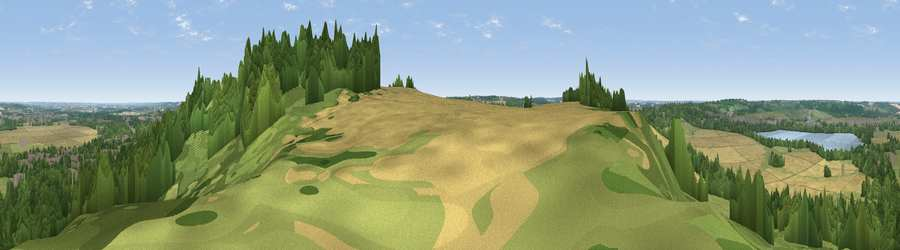

Viewpoint near Lidlington
#31234 in England · top 44% of its area beats it · near Lidlington · footpathWhere it is
The exact computed spot (SP 98650 38591). Click the marker for map links.
Public access: a public right of way passes within 58 m of this spot. Computed from Natural England's CRoW access layer and OpenStreetMap rights of way — not the legal definitive map. Always verify locally.
The view, rendered

A 360° render of this exact spot computed from the terrain model, tree cover and land cover — summer colours, afternoon light, calibrated against photographs of famous viewpoints. Real trees, hedges and buildings will differ in detail.
The panorama
Grey silhouette: terrain skyline in each direction (720 bearings, Earth curvature and refraction included). Dashed green: skyline with trees (+15 m) and buildings (+8 m) as obstacles. Blue strip: how far the ground is visible on each bearing.
Where the view opens
Wedge length = distance to the farthest visible ground on that bearing (vegetation-aware). Rings at 10, 25 and 50 km.
What fills the view
47% woodland · 25% grassland · 20% cropland · 5% built-up · 3% water
Angular shares of the visible panorama (visual magnitude), not map area. Landscape diversity 0.56 (0–1 Shannon).
Key numbers
More beautiful places nearby
The staircase of upgrades: each row has a higher view potential than everything closer. Driving times are estimates from straight-line distance, calibrated against real road routing — check an actual route before setting out.
| Place | Direction | Drive | Score |
|---|---|---|---|
| Viewpoint near Lidlington | ESE · 0 km | ~1 min | 48.4 |
| Viewpoint near Bow Brickhill | WSW · 8 km | ~17 min | 48.9 |
| Viewpoint near Sharpenhoe | SE · 12 km | ~22 min | 52.0 |
| Viewpoint near Sharpenhoe | SE · 12 km | ~22 min | 54.0 |
| Viewpoint near Hexton | SE · 14 km | ~25 min | 64.2 |
| Viewpoint near Hexton | SE · 16 km | ~29 min | 65.4 |
| Beacon Hill | S · 22 km | ~36 min | 74.1 |
| Viewpoint near Halton | SSW · 30 km | ~47 min | 74.3 |
52.03696, -0.56324 · source: osm viewpoint · position refined by local search. Computed location — check access rights before visiting.